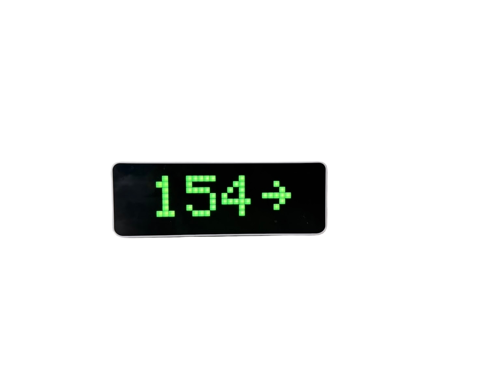

Connection guides · English
Nightscout clock via a custom JSON endpoint
Connect Nightscout data to SugarClock using an adapter that returns the supported glucose JSON format. Includes field mapping, timestamps, authentication, and troubleshooting.

Check compatibility first
SugarClock (Sugar Clock) can display Nightscout data through Custom URL. The current firmware expects one JSON object with glucose, trend, and a sensor timestamp. It does not parse Nightscout's raw entries array or its sgv/date fields directly.
This guide is for people who already operate a Nightscout server and can provide an adapter endpoint. There is no built-in Nightscout adapter or one-click Nightscout connection in this firmware. If you do not have an adapter, build or obtain one that satisfies the contract below before configuring the clock.
- A Ulanzi TC001 with SugarClock installed and 2.4 GHz Wi-Fi.
- A Nightscout instance that already receives current CGM readings.
- An adapter reachable by the clock that reads the latest Nightscout entry and returns the JSON object below.
- Authentication appropriate to both services. Give the adapter read-only access to Nightscout; it does not need an administrator credential.
Prepare the adapter and connect
- Verify that Nightscout shows a current reading. Use your instance's API documentation to read its latest glucose entry; a typical v1 endpoint is
/api/v1/entries/sgv.json?count=1. - Have your adapter select that latest entry and map its fields to SugarClock's format. Return an HTTP 200 JSON object, not a login page, HTML dashboard, or array.
- Preserve the sensor's timestamp and units using the mapping below. Return an error when no valid current reading is available; do not manufacture a new timestamp for cached data.
- Open the clock's local settings page. In Settings → Blood Sugar, select Custom URL and enter the adapter's Server URL.
- If the adapter requires a bearer token, enter that token in Auth Token. SugarClock sends
Authorization: Bearer <token>. This is the adapter's authentication contract, not automatic support for every Nightscout authentication method. - Save and use Test Connection. Compare the number, trend, and reading age with Nightscout. Keep the default 60-second polling interval while validating.
JSON response contract
{
"glucose": 125,
"trend": "Flat",
"timestamp": 1708000000
}Synthetic format example with a historical timestamp. An actual endpoint must return the real sensor reading and its original timestamp.
| Input | Output | Rule |
|---|---|---|
sgv | glucose | Positive glucose value in mg/dL. The clock's display setting handles conversion to mmol/L. |
direction | trend | Use a supported name such as Flat, FortyFiveUp, SingleUp, DoubleUp, FortyFiveDown, SingleDown, or DoubleDown. |
date | timestamp | Convert UTC epoch milliseconds to integer seconds. Preserve it across repeated polls of the same entry. |
Missing or zero timestamps use receipt-time fallback, which cannot detect cached readings returned by successful polls. Supplying the sensor timestamp is essential for meaningful age and stale-data behavior. Optional message and force_mode fields are documented in the project's installation reference.
Troubleshooting
- HTTP 200 but no glucose
- Inspect the response shape. A raw
[{"sgv":125}]Nightscout array is not the expected{"glucose":125}object. Check the adapter's conversion and content type. - 401 or 403
- Check adapter authentication separately from its upstream Nightscout token. Do not make your medical data public to work around authentication failures.
- Reading looks fresh when Nightscout is stale
- Check that the adapter keeps the sensor's timestamp instead of replacing it with request time. Confirm milliseconds were converted to seconds.
- Wrong units or trend
- Return glucose in mg/dL and a supported text direction. Configure mmol/L on the clock if desired; do not convert twice.
References
Current firmware limitation: the Dexcom and Custom URL clients do not validate the remote TLS certificate. An HTTPS address alone does not remove that limitation. Keep this in mind when deciding where to use these integrations.